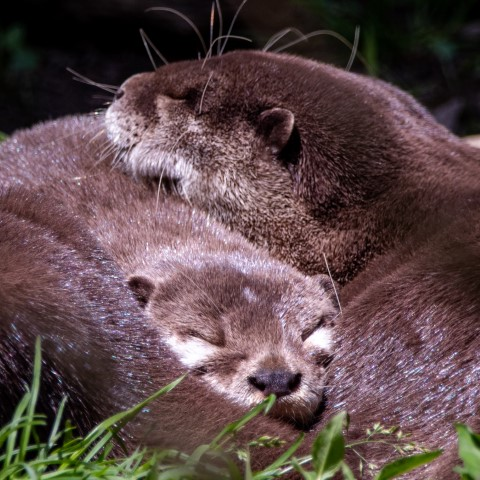
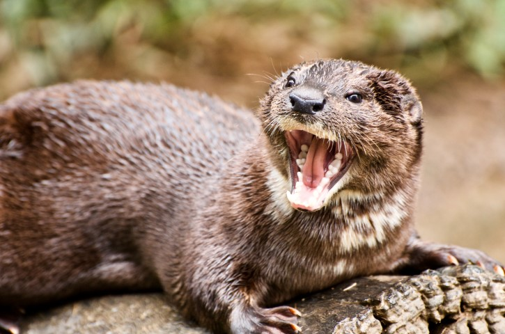
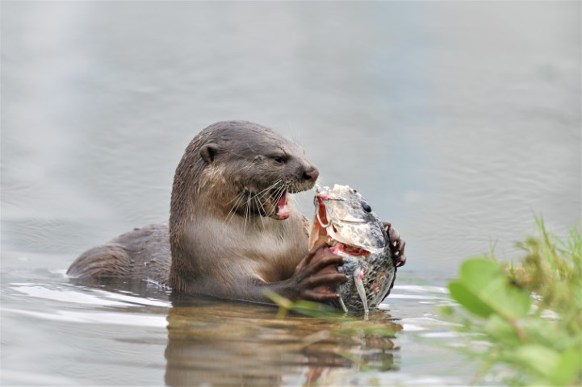
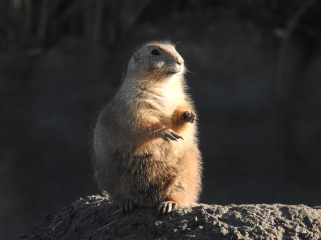

Otters are awesome
These mammals will rule the world with an iron fist one day but for now we are safe. Sign up to virtually pet an otter
Ottery moods

Sleepy. Otters are lazy by nature and love snuggling each other

Angry. Otters are known for being short tempered as shown by this one yelling after stepping over a lego

Hungry. Some animals can last long without eating anything, otters don't, they need lots of fish in order to fill their bloodlust

Reflexive. Otters are known to be masters of meditation, as shown by this prairie otter reflecting on existence
"Otters seem to make slides for fun. They will often slide down a muddy bank into the water, climb out, and do the whole thing again."